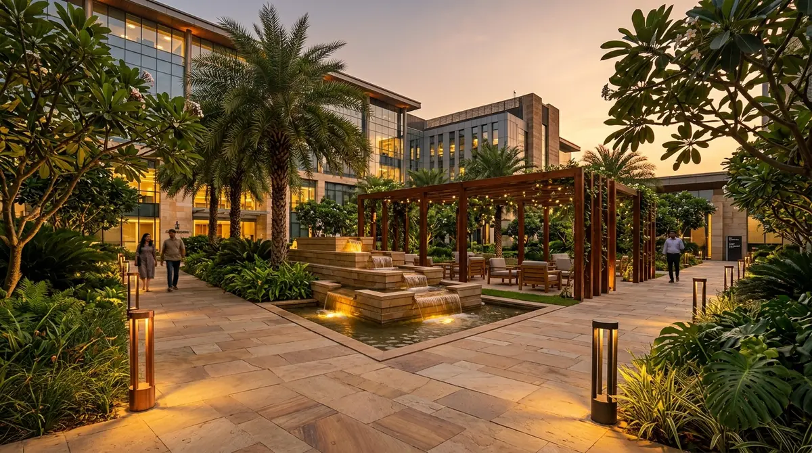

A farmhouse gives you space that a city home never does: room for lawns, an orchard, shade trees and a kitchen garden. It also brings the full force of the NCR climate, from hot dry winds in May to heavy monsoon rain and cold winter nights. A good farmhouse garden is planned around all of it.

1. Plan the zones before you plant
Walk the plot and divide it into zones: the arrival and driveway, the lawn around the house, an orchard, a kitchen garden, and a service area for water tanks, pumps and storage. Deciding this first stops you planting a tree where a driveway or a pipe needs to go later.
2. Test the soil
Soil across NCR varies a lot, and some areas have alkaline or salty patches that hold plants back. A basic soil test for pH, salinity and organic matter tells you what to correct and which plants will do well. It costs very little compared with replacing plants that never establish.
3. Sort out the water
Know where your water comes from, how much you have and how good it is. Check the local rules on groundwater use, and plan rainwater harvesting so that monsoon water recharges the ground instead of running off. Lay out the main pipelines before planting, so you are not digging up a new lawn later.
On a farmhouse, water decides almost everything else. Plan it first, and the garden becomes far easier to keep alive.
4. Plant windbreaks and shade trees early
Trees take the longest to grow, so plant them first. A row of trees along the boundary that faces the hot summer winds protects everything inside it. Native and naturalised trees such as neem, arjun, jamun and pilkhan cope with the heat, give dense shade and need little care once established.
5. Choose a lawn that can take the heat
Doob grass, a Bermuda type, handles north Indian summers and heavy use well. Keep large lawns where you will actually use them, and use ground covers or mulched beds in the rest. That saves a great deal of water and mowing.
6. Add an orchard and kitchen garden
Mango, guava, citrus, pomegranate, amla and jamun all grow well in the region. Plant them in well-prepared pits with compost, protect young trees from animals, and give each one enough room to reach full size. A small kitchen garden near the house, with raised beds and drip lines, keeps fresh herbs and vegetables within easy reach.
7. Time planting with the seasons
- Monsoon, July to September: the best time for most trees and shrubs.
- February and March: a good second window before the heat.
- May and June: avoid new planting; focus on watering what is already in the ground.
8. Water with drip and sprinklers
Use drip lines for trees, beds and the orchard, and sprinklers only for the lawn. Split the system into zones by water need and run it on timers, so each area gets what it needs without waste.
How we approach farmhouse gardens
Our horticulturist, who holds an M.Sc. in Botany and has 30+ years of field experience, chooses species for your soil and the season, and the same team designs and installs the irrigation. See our landscape services and irrigation services.
Planning a farmhouse garden?
Tell us where the farmhouse is, roughly how large the plot is and what you would like from the garden. We will reply within 24 hours with ideas and an estimate.
Book a Site Visit ↗